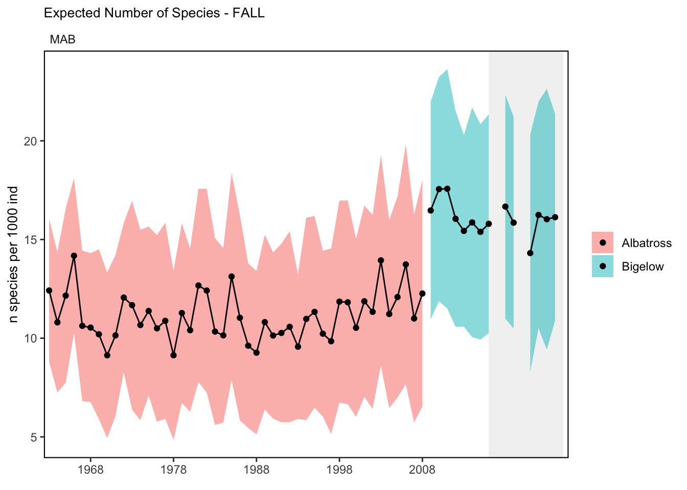
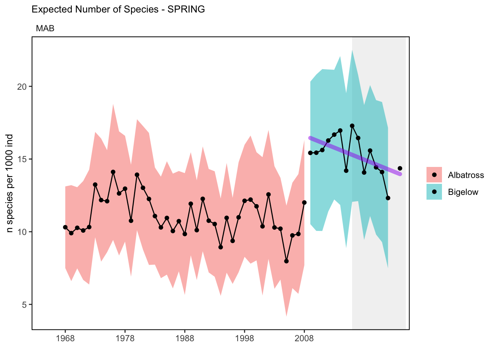
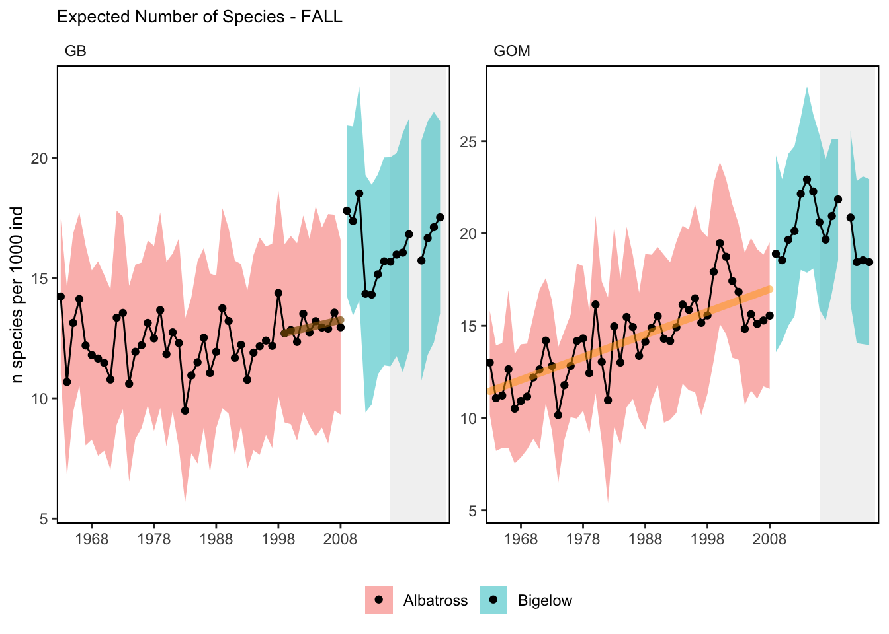
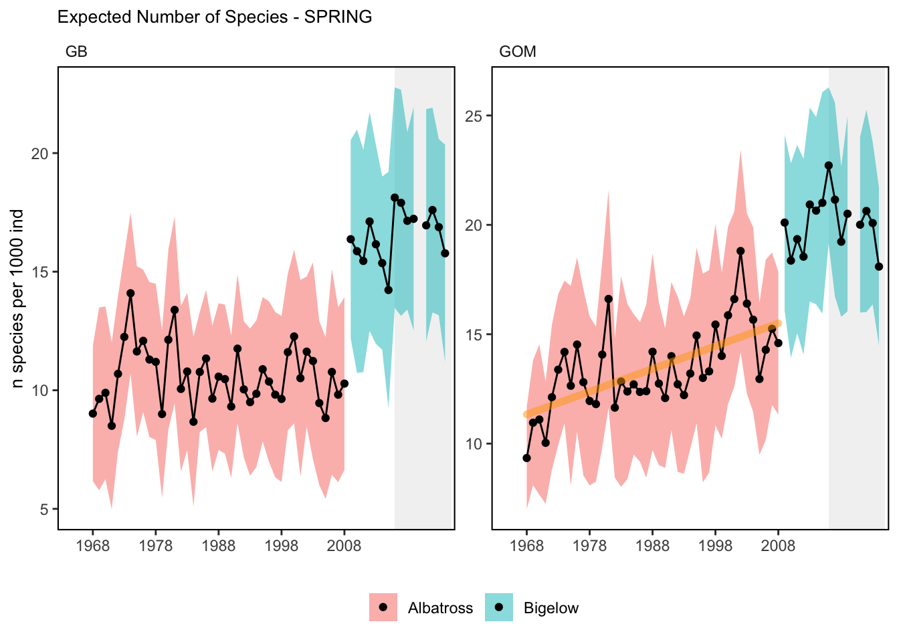

SMART Indicator Report: Expected Number of Species
1 Descriptive Section
1.2 Indicator name
Expected Number of Species
Includes variable(s): Albatross-FALL, Albatross-SPRING, AlbatrossSD-FALL, AlbatrossSD-SPRING, Bigelow-FALL, Bigelow-SPRING, BigelowSD-FALL, BigelowSD-SPRING
1.3 Indicator brief description
Diversity metric from the Northeast Fisheries Science Center (NEFSC) Bottom Trawl Surveys.
1.4 Indicator visualization
Due to the shift to the NOAA vessel Henry B. Bigelow in 2009 and the inability to correct for species composition, the time series is broken into Albatross and Bigelow stanzas. There is an apparent trend in the data from the Albatross time period in the Gulf of Maine. There is a declining trend in the Mid-Atlantic data from the spring Bigelow period.

2 SMART Attribute Section
2.1 Indicator documentation
2.1.1 Are indicators available for others to use (data downloadable)?
Yes
2.1.1.1 Where can indicators be found?
Data: https://noaa-edab.github.io/ecodata/index.html
Description: https://noaa-edab.github.io/catalog/exp_n.html
Technical documentation: https://noaa-edab.github.io/tech-doc/exp_n.html
2.1.1.2 How often are they updated? Are future updates likely?
[need sequential look at datasets for update frequency. Future requires judgement]
2.1.1.3 Who is the contact?
Andrew Beet (Andrew.Beet@NOAA.gov)
2.1.2 Gather indicator statistics
2.1.2.1 Units
Indicator | Units |
|---|---|
Albatross-FALL | n species per 1000 ind |
Albatross-SPRING | n species per 1000 ind |
AlbatrossSD-FALL | n species per 1000 ind |
AlbatrossSD-SPRING | n species per 1000 ind |
Bigelow-FALL | n species per 1000 ind |
Bigelow-SPRING | n species per 1000 ind |
BigelowSD-FALL | n species per 1000 ind |
BigelowSD-SPRING | n species per 1000 ind |
2.1.2.2 Length of time series, start and end date, periodicity
General overview: Spring (March-May) and Fall (September-November)
Indicator specifics:
Indicator | EPU | StartYear | EndYear | NumYears | MissingYears |
|---|---|---|---|---|---|
Albatross-FALL | GB | 1963 | 2008 | 46 | 0 |
Albatross-FALL | GOM | 1963 | 2008 | 46 | 0 |
Albatross-FALL | MAB | 1963 | 2008 | 46 | 0 |
Albatross-FALL | SS | 1963 | 2008 | 46 | 0 |
Albatross-SPRING | GB | 1968 | 2008 | 41 | 0 |
Albatross-SPRING | GOM | 1968 | 2008 | 41 | 0 |
Albatross-SPRING | MAB | 1968 | 2008 | 41 | 0 |
Albatross-SPRING | SS | 1968 | 2008 | 41 | 0 |
AlbatrossSD-FALL | GB | 1963 | 2008 | 46 | 0 |
AlbatrossSD-FALL | GOM | 1963 | 2008 | 46 | 0 |
AlbatrossSD-FALL | MAB | 1963 | 2008 | 46 | 0 |
AlbatrossSD-FALL | SS | 1963 | 2008 | 46 | 0 |
AlbatrossSD-SPRING | GB | 1968 | 2008 | 41 | 0 |
AlbatrossSD-SPRING | GOM | 1968 | 2008 | 41 | 0 |
AlbatrossSD-SPRING | MAB | 1968 | 2008 | 41 | 0 |
AlbatrossSD-SPRING | SS | 1968 | 2008 | 41 | 0 |
Bigelow-FALL | GB | 2009 | 2024 | 15 | 1 |
Bigelow-FALL | GOM | 2009 | 2024 | 15 | 1 |
Bigelow-FALL | MAB | 2009 | 2024 | 14 | 2 |
Bigelow-FALL | SS | 2009 | 2024 | 15 | 1 |
Bigelow-SPRING | GB | 2009 | 2024 | 15 | 1 |
Bigelow-SPRING | GOM | 2009 | 2024 | 15 | 1 |
Bigelow-SPRING | MAB | 2009 | 2024 | 15 | 1 |
Bigelow-SPRING | SS | 2009 | 2024 | 15 | 1 |
BigelowSD-FALL | GB | 2009 | 2024 | 15 | 1 |
BigelowSD-FALL | GOM | 2009 | 2024 | 15 | 1 |
BigelowSD-FALL | MAB | 2009 | 2024 | 14 | 2 |
BigelowSD-FALL | SS | 2009 | 2024 | 15 | 1 |
BigelowSD-SPRING | GB | 2009 | 2024 | 15 | 1 |
BigelowSD-SPRING | GOM | 2009 | 2024 | 15 | 1 |
BigelowSD-SPRING | MAB | 2009 | 2024 | 15 | 1 |
BigelowSD-SPRING | SS | 2009 | 2024 | 15 | 1 |
2.1.2.3 Spatial location, scale and extent
General overview: By EPU
Indicator specifics:
Indicator | EPU |
|---|---|
Albatross-FALL | GB |
Albatross-FALL | GOM |
Albatross-FALL | MAB |
Albatross-FALL | SS |
Albatross-SPRING | GB |
Albatross-SPRING | GOM |
Albatross-SPRING | MAB |
Albatross-SPRING | SS |
AlbatrossSD-FALL | GB |
AlbatrossSD-FALL | GOM |
AlbatrossSD-FALL | MAB |
AlbatrossSD-FALL | SS |
AlbatrossSD-SPRING | GB |
AlbatrossSD-SPRING | GOM |
AlbatrossSD-SPRING | MAB |
AlbatrossSD-SPRING | SS |
Bigelow-FALL | GB |
Bigelow-FALL | GOM |
Bigelow-FALL | MAB |
Bigelow-FALL | SS |
Bigelow-SPRING | GB |
Bigelow-SPRING | GOM |
Bigelow-SPRING | MAB |
Bigelow-SPRING | SS |
BigelowSD-FALL | GB |
BigelowSD-FALL | GOM |
BigelowSD-FALL | MAB |
BigelowSD-FALL | SS |
BigelowSD-SPRING | GB |
BigelowSD-SPRING | GOM |
BigelowSD-SPRING | MAB |
BigelowSD-SPRING | SS |
2.1.3 Are methods clearly documented to obtain source data and calculate indicators?
Yes
2.1.3.1 Can the indicator be calculated from current documentation?
The expected number of species (\(E(S_n)\)) was calculated for each survey tow as: \[\begin{equation} E(S_n) = \sum_{i=1}^S{ \Bigg( 1 - \frac{\binom{N-N_i}{n}}{\binom{N}{n}} \Bigg) } \end{equation}\] where \(S\) is the total number of species present, \(N\) the total number of individuals, and \(N_i\) the number of individuals of ith species. The result represents a sample of n individuals randomly selected from the tow without replacement. The calculation is made using the rarefy function of the vegan package (Dixon 2003) using an n of 1000. The number of species represented in these samples of 1000 fishes are then averaged over the survey for each Ecological Production Unit. Due to the lack of survey calibration factor to account for differences in the number of species caught between the NOAA Ship Albatross IV and NOAA Ship Henry B. Bigelow, the time series are kept separate.
2.1.4 Are indicator underlying source data linked or easy to find?
Source data are publicly available.
2.1.4.1 Where are source data stored?
Data used for the calculation of the expected number of species come from the Northeast Fisheries Science Center’s survey database (SVDBS) as pulled in the Survdat data set. These data are available to qualified researchers upon request. More information on the data request process is available under the “Access Information” field here.
2.1.4.2 How/by whom are source data updated? Are future updates likely?
Andy Beet, andrew.beet@noaa.gov
[likelihood of source data updates requires judgement, enter by hand]
2.2 Indicator analysis/testing or history of use
2.2.1 What decision or advice processes are the indicators currently used in?
Diversity estimates have been developed to understand whether the overall structure of the ecosystem has remained stable or is changing. There are a large number of diversity indices that can be used to measure diversity; for the purposes of the State of the Ecosystem report we report on the expected number of species in a sample size (E(Sn)). These “rarefied” samples allow for comparisons between sample sites with varying number of species present. The estimate of (E(Sn) is less biased than other diversity indices which usually increase with sample size. It also has a more meaningful biological interpretation than other indices. For example, if a predator eats 10 random individuals, E(Sn) will predict the number of species consumed.
2.2.2 What implications of the indicators are currently listed?
Diversity is used as a proxy for stability. Changes in ecological diversity over time may indicate altered ecosystem structure with implications for fishery productivity and management [53]. This indicator shows that the underlying ecosystem is relatively stable with the possibility that the Gulf of Maine is becoming more diverse. Increasing adult diversity in the Gulf of Maine suggests an increase in warm-water species and should be closely monitored. Recent declining adult diversity in the Mid-Atlantic should also be closely monitored for management implications.
2.2.4 Have the indicators been tested to ensure they respond proportionally to a change in the underlying process?
No
3 SMART rating
Category | Indicator | Element | Attribute | Rating | ElementRating | OverallRating |
|---|---|---|---|---|---|---|
Fish | Expected Number of Species | Specific | Described | 1 | 0.8333333 | 0.7 |
Fish | Expected Number of Species | Specific | Units | 1 | 0.8333333 | 0.7 |
Fish | Expected Number of Species | Specific | Spatial | 1 | 0.8333333 | 0.7 |
Fish | Expected Number of Species | Specific | Uncertainty | 1 | 0.8333333 | 0.7 |
Fish | Expected Number of Species | Specific | Methods | 1 | 0.8333333 | 0.7 |
Fish | Expected Number of Species | Specific | Code | 0 | 0.8333333 | 0.7 |
Fish | Expected Number of Species | Measurable | Available | 1 | 1.0000000 | 0.7 |
Fish | Expected Number of Species | Measurable | Online | 1 | 1.0000000 | 0.7 |
Fish | Expected Number of Species | Measurable | Contact | 1 | 1.0000000 | 0.7 |
Fish | Expected Number of Species | Measurable | SourceDat | 1 | 1.0000000 | 0.7 |
Fish | Expected Number of Species | Measurable | SourceAvail | 1 | 1.0000000 | 0.7 |
Fish | Expected Number of Species | Measurable | SourceContact | 1 | 1.0000000 | 0.7 |
Fish | Expected Number of Species | Achievable | Tested | 0 | 0.0000000 | 0.7 |
Fish | Expected Number of Species | Achievable | Sensitivity | 0 | 0.0000000 | 0.7 |
Fish | Expected Number of Species | Achievable | TimeLag | 0 | 0.0000000 | 0.7 |
Fish | Expected Number of Species | Relevant | Advice | 1 | 0.6666667 | 0.7 |
Fish | Expected Number of Species | Relevant | Implications | 1 | 0.6666667 | 0.7 |
Fish | Expected Number of Species | Relevant | TargThresh | 0 | 0.6666667 | 0.7 |
Fish | Expected Number of Species | Timebound | Frequency | 1 | 1.0000000 | 0.7 |
Fish | Expected Number of Species | Timebound | Updated | 1 | 1.0000000 | 0.7 |
3.1 Comments
[Fill below by hand once above data complete]
3.1.1 Additional potential links to management in addition to uses listed above
3.1.2 What additional work would be needed for the Council to use the indicator?
3.1.3 What issues are caused if there is a gap or delay in data underlying the indicator